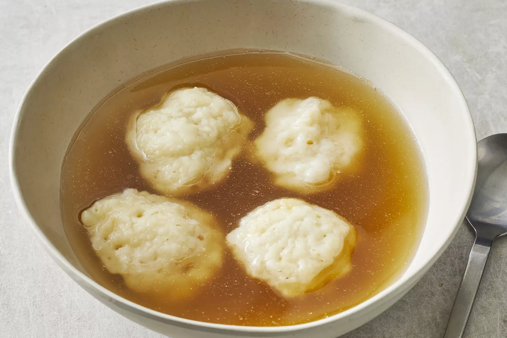

Spaghetti

My mother was one of the best cooks I ever knew. Whenever she made stews we mostly found homemade dumplings in them.
We never ate things from packages or microwaves and you sure could taste what food was.
That's the only way I cook today - I don't use any electronic gadgets to cook with except an electric stove.
Ingredients
- 1 cup all-purpose flour
- 2 teaspoons baking powder
- 1 teaspoon white sugar
- ½ teaspoon salt
- 1 tablespoon margarine
- ½ cup milk
Steps
Step 1
Stir together flour, baking powder, sugar, and salt in a bowl. Cut in butter until mixture is crumbly.
Stir in milk and mix until a batter forms that is thick enough to be scooped with a spoon.
Allow batter to rest for 3 to 5 minutes..Step 2
Drop batter by spoonfuls into boiling stew or soup. Cover and simmer without lifting the lid for 15 minutes.
Serve.